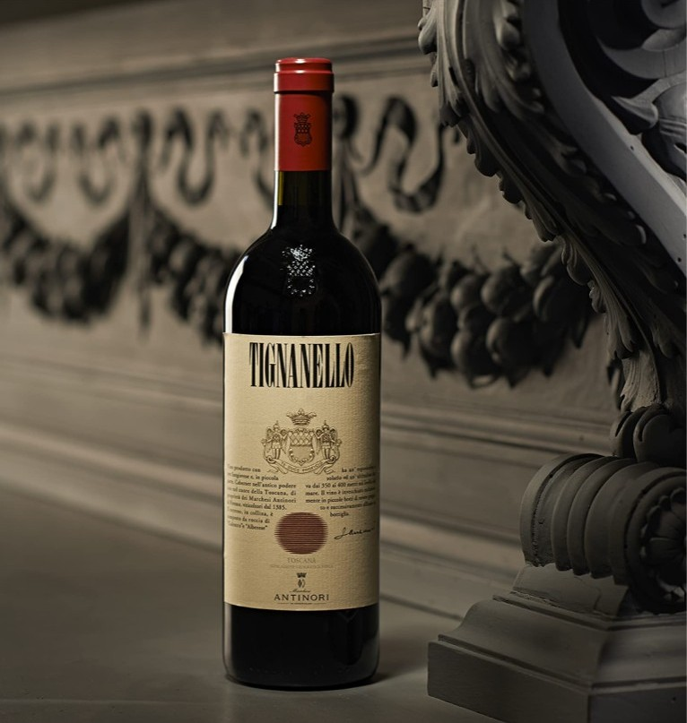
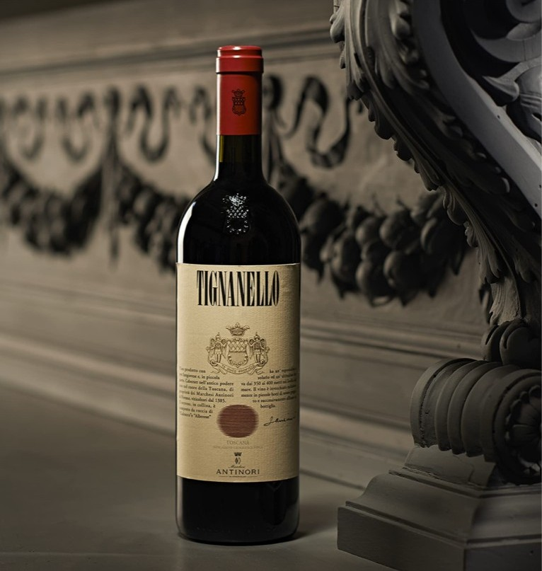

grapes (sangiovese, cabernet sauvignon, cabernet franc), aqua / water, ethanol, sulfur dioxide, sodium metabisulfite, glycerol, tartaric acid, esters, polyphenols, yeast nutrients, bentonite, activated carbon, pectic enzyme
Price: £155.00
Tignanello was first produced by the Antinori family in the early 1970s and is widely credited as one of the founding wines of the Super Tuscan movement. Tignanello combines Sangiovese with Cabernet varieties and is aged in barriques rather than large casks.
Today Tignanello is a flagship IGT Toscana wine made from a selection of Sangiovese plus Cabernet Sauvignon and Cabernet Franc. It’s known for ripe red-fruit character, bright acidity, firm structure and polished tannins. It’s consistently treated as a premium wine and vintages are sold by specialist merchants and fine wine shops worldwide.